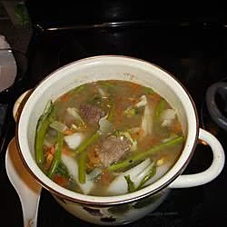

Beef Sinigang

Description:
Sinigang is a Filipino soup or stew characterized by its sour and savoury taste. It is most often associated with tamarind (Filipino: sampalok), although it can use other sour fruits and leaves as the souring agent.
Ingredients:
- 2 tablespoons canola oil
- 1 large onion, chopped
- 2 cloves garlic, chopped
- 1 pound beef stew meat, cut into 1 inch cubes
- 1 quart water
- 2 large tomatoes, diced
- ½ pound fresh green beans, rinsed and trimmed
- ½ medium head bok choy, cut into 1 1/2 inch strips
- 1 head fresh broccoli, cut into bite size pieces
- 1 (1.41 ounce) package tamarind soup base
Steps:
- Heat oil in medium stock pot. Saute onion and garlic until tender. Add beef to pot, and saute until browned. Pour in water. Bring to a boil, reduce heat, and simmer 20 to 30 minutes.
- Place tomatoes and green beans in pot, and continue to simmer for 10 minutes. Stir in bok choy, broccoli and tamarind soup mix. Simmer for an additional 10 minutes.